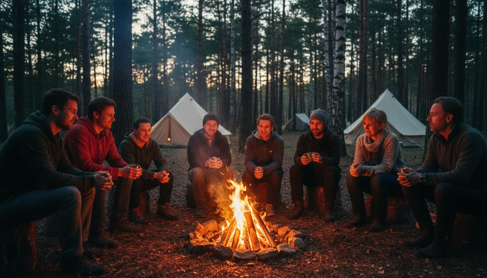

Esci dalla modalità
sopravvivenza.
Esperienze brevi e dense in natura per chi funziona benissimo fuori e si sta spegnendo dentro. Niente corsi, niente retreat. Il corpo fa la prima mossa, la testa si ferma dopo.
Se ti riconosci in una di queste persone
“Martedì, 23:10. Il laptop è ancora aperto sul divano. È la terza sera di fila che si dice: stasera stacco.”
Sara
37 anni, Project manager, Milano
“Nel parcheggio dell'ospedale, dopo 11 ore di turno. Per un attimo ricorda perché, anni fa, aveva scelto questo lavoro.”
Marco
42 anni, Medico ospedaliero, Bologna
“Lunedì mattina. Prova a ricordare com'è stato il weekend e non ci riesce.”
Federica
34 anni, Avvocata, Roma
“Ha tutto quello che si può misurare. E gli manca lo stesso qualcosa di cui non sa il nome.”
Andrea
45 anni, Founder PMI, Torino

Attraversare il sentiero, o abitarlo?
C'è una differenza tra arrivare in cima e vivere la salita.
La cima è una meta: si misura, si fotografa, si posta. Ma quello che conta — il sentiero — è dove succede tutto il resto.
Abitare il sentiero vuol dire che ogni passo è già arrivo. Non stai correndo da qualche parte. Sei dove sei, con tutta l'attenzione che hai.
“Non si tratta di arrivare da qualche parte. Abitare il sentiero: è quello, il viaggio.”
Esperienza, non conoscenza
Puoi leggere cento libri sul fuoco. Ma capisci qualcosa solo quando lo accendi con le tue mani — e nessun libro te lo può insegnare.
Conoscenza
Leggi, studi, capisci con la testa. Resta teoria. Si dimentica.
Esperienza
Fai, provi, sbagli, riprovi. Il corpo registra. Questo non si dimentica.
Osservazione
Poi guardi cos'è emerso. È lì che arriva la consapevolezza. La vedi tu, non te la spiego io.
“Non insegno. Facilito uno spazio in cui si fa esperienza diretta. Poi quello che emerge porta la consapevolezza.”

Natura · Avventura · Consapevolezza
Natura
Il bosco non è uno sfondo. È il posto dove le cose tornano reali. L'unico dove il ritmo è quello giusto.
Avventura
Camminare di notte. Accendere un fuoco con le mani. Dormire sotto le stelle. Gesti concreti che ti riportano nel corpo.
Consapevolezza
Dopo, lo spazio per guardare cos'è emerso. Cosa hai scoperto? Non te lo dico io. Lo vedi tu.

Questo mese
Le prossime uscite. Gruppi piccoli, posti che finiscono. Nessuna fretta — ma le date sono queste.
L'avventura è iniziata!
Escape the City
30 ore · Appennino
Come abitare il sentiero
Ogni percorso usa il bosco in modo diverso. Tutti partono dallo stesso punto: uscire dalla modalità sopravvivenza.
Escape the City
Dalla sopravvivenza alla convivenza
Un weekend nel bosco: orientamento, fuoco acceso con le mani, esperienze sensoriali, notte in tenda. Per staccare dal telefono e tornare a sentire il tuo ritmo.
Accendi il tuo Fuoco
L'archetto come metafora del progetto
3 ore per osservarti mentre affronti una sfida concreta. L'archetto rivela come reagisci quando qualcosa non viene subito. Torni a casa con un'azione, non con un'idea.
La Mappa del tuo Viaggio
Cartografia interiore in natura
3 ore per disegnare la mappa del tuo percorso. Bussola, curve di livello, sentieri: dal territorio reale a quello dentro di te.
Via degli Dei
Bivacco, comunità, cammino
Cammino storico con bivacco nel bosco e visita a un ecovillaggio. Cammini lento, dormi sotto le stelle, incontri chi ha scelto di vivere diversamente.
Il Cammino
Il viaggio dell'eroe in natura
4 giorni zaino in spalla. Ogni tappa è una fase del Cammino dell'Eroe: la chiamata, la sfida, la visione, il ritorno.
Elementi di Convivenza
Dalla sopravvivenza alla convivenza
2 giorni in cui fuoco, acqua, buio, riparo, cibo e terra diventano metafore della tua vita. Non per sopravvivere: per convivere.
Cosa dice chi ha camminato
Clicca per vedere il video

“Escape the City mi ha fatto rivedere cosa chiedo a un weekend.”
Andrea, Founder PMI

“3 ore che mi sono rimaste addosso più di un weekend intero.”
Sara, Project Manager

“Camminare lento e incontrare chi vive diversamente mi ha aperto un mondo.”
Paolo, Medico

“4 giorni dopo i quali i miei weekend non sono stati più gli stessi.”
Chiara, Avvocata
Sono partito con lo zaino pieno di pensieri e sono tornato più leggero. Non perché qualcuno mi abbia risolto i problemi: perché ho ritrovato il respiro.
Luca
38, Bologna
Non sapevo cosa aspettarmi. Ed è stato il bello. Ogni attività mi ha parlato di me come nessun libro o corso aveva fatto.
Elena
34, Firenze
Siamo tornati più uniti, ma soprattutto più consapevoli di come lavoriamo insieme.
Marco
45, Milano
Ho capito che forzavo troppo. Nella vita, nel lavoro, nelle relazioni. L'archetto me l'ha messo davanti.
Giulia
41, Torino
30 ore che hanno cancellato sei mesi di rumore. Tornare e sentire la città in modo diverso.
Valeria
35, Milano
La mappa che ho disegnato è appesa sopra la scrivania. Mi ricorda dove voglio andare.
Roberta
38, Bologna
Non sono un guru.
Sono un compagno di cordata.
Per anni ho lavorato nel mondo corporate, tra Svizzera, Londra e Australia. Ex-informatico, poi designer. Codice, riunioni, notifiche. Rispondevo alle mail alle 23 e la domenica correvo nella metro senza un vero motivo.
Poi ho lasciato tutto per un viaggio di due anni. Furgone, boschi, agricoltura, ecovillaggi. Non per fuggire: per togliere strati.
Oggi il bosco è il mio ufficio. Non ti accompagno per cambiarti. Ti accompagno a fare un'esperienza che il corpo non dimentica.

Senti di vivere in modalità sopravvivenza?
Scarica “Dalla Sopravvivenza alla Convivenza”: sei capitoli per capire come sei finito a gestire la vita invece di viverla — e da dove si comincia a cambiare.
- Il bosco come specchio
- Le domande che cambiano la direzione
- Abitare nasce dallo stare
- Portare la convivenza nella vita di tutti i giorni
- 5 pratiche per iniziare oggi
Scarica la guida gratuita
Niente spam. Solo pensieri dal bosco, quando ne vale la pena.
Testa, Cuore, Mani
Ogni attività si muove su tre piani — mai uno senza gli altri.
Testa
Storie, metafore, domande aperte. La cornice che dà senso al gesto. Il respiro prima dell'azione.
Mani
Fuoco, cammino, costruire, cucinare. Il corpo che agisce. Si impara facendo, non ascoltando.
Cuore
Cosa mi dice di me questa esperienza? Lo spazio per osservare. Chi vuole parla, chi non vuole ascolta.
Resta aggiornato
Prossime date, storie dal bosco, pensieri attorno al fuoco.

Sembra qualcosa per te?
Scrivimi senza impegno. Una conversazione per capire insieme quale sentiero fa al caso tuo — non una vendita.
+39 3667187733
abitareilsentiero@gmail.com